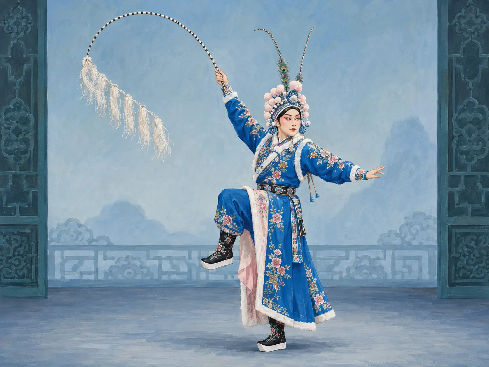
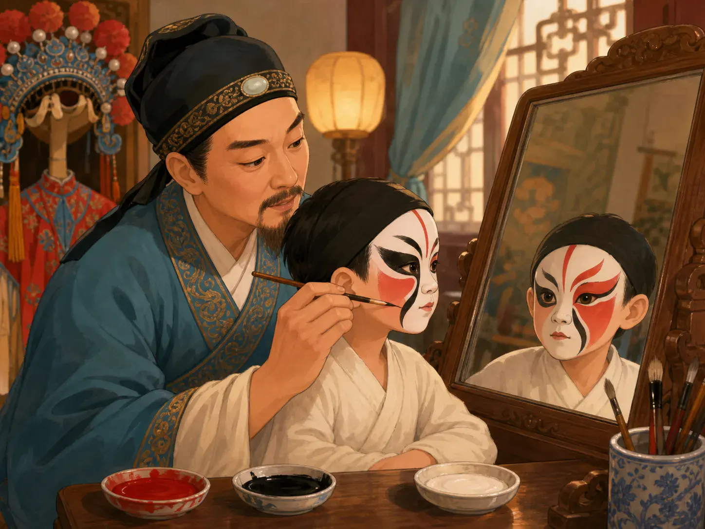

京剧：台上没有马，为什么你却看见了马？
Peking Opera: There Is No Horse on Stage—So Why Can You See One?
Page 1
舞台会给你线索
The Stage Gives You Clues

There is no horse onstage; the whip and the performer's movements bring one to life in the audience's imagination.
想象一下，你第一次去看jīngjù · 结合唱、念、做、打的中国戏曲形式。。舞台看起来空空的，没有树林，没有山路，当然也没有一匹马。
这时，一位演员走上台，手里拿着一根装饰漂亮的马鞭。他抬起一条腿，好像踩进马镫，两手拉住看不见的缰绳，身体随着脚步一起一伏。速度越来越快，他突然向后一勒。
奇怪的是，你居然看见了一匹马。可是舞台上明明还是没有马。
京剧并不总是想把真实世界原样搬到舞台上。它更喜欢给观众一些线索，剩下的交给想象。
一根马鞭告诉你，这个人正在骑马。一支船桨，可以让空空的舞台变成一条河。演员在舞台上绕上一圈，就可能表示已经赶了很远的路。甚至最简单的一张桌子和两把椅子，只要换一种摆法，也可以帮助表示不同的地方。
看得多了，观众就会读懂这些线索。于是，一个几乎空着的舞台，可以变成山路、河流、宫殿，也可以变成战场。
Imagine watching jīngjù · 京剧 · A form of Chinese opera combining song, speech, movement, and stylized combat. for the first time. The stage looks surprisingly empty. There is no forest, no mountain road, and certainly no horse.
Then an actor walks onstage holding a decorated riding whip. He lifts one leg as if stepping into a stirrup, takes hold of invisible reins, and begins to move. His body rises and falls. He leans forward as the pace quickens, then suddenly pulls back.
Somehow, you can see the horse. But there is still no horse onstage.
Peking opera does not always try to make the stage look like the real world. Instead, it gives the audience clues and lets imagination do the rest.
A riding whip tells you that a character is on horseback. An oar can turn an empty stage into a river. An actor can walk in a circle and show that a long journey has passed. Even a simple table and two chairs can help suggest different places depending on how they are arranged.
The audience learns to read these clues. Once you know the rules, an almost empty stage can become a road, a boat, a palace, or a battlefield.
Page 2
脸也会给你线索
Faces Give Clues Too

Peking opera facial makeup uses complete designs of color, line, and pattern—not a simple one-color, one-meaning code.
另一个人物出场了。他还没有开口，你已经先注意到了他的脸。
京剧里有些角色会画上夸张而鲜艳的脸谱。脸上的颜色、线条和图案，可以给观众关于人物性格和身份的线索。服装和头饰也会告诉你一些事情。
不过，脸谱并不是一种“一个颜色永远只有一个意思”的简单密码。要看整个图案，而且京剧里很多角色根本不画脸谱。
它和那匹看不见的马其实很像：人物还没有解释，舞台已经偷偷告诉了你一些东西。
Then another performer enters, and before the character even speaks, you notice the face.
Some Peking opera roles wear elaborate painted designs called lianpu, or facial makeup. Strong colors, lines, and patterns can give the audience clues about a character’s personality and identity. Costumes and headwear can offer clues too.
But face paint is not a simple code where one color always means exactly one thing. The whole design matters, and many Peking opera characters do not wear painted faces at all.
The point is the same as with the invisible horse: the stage gives you information before anyone has to explain it.
Page 3
听一听那匹马
Listen to the Horse
刚才骑马的演员又动了。这一次，仔细听。
锣鼓越来越快，那匹看不见的马好像也跑得越来越快。一个响亮的鼓点，演员猛地转身；声音一变，他拉住缰绳，马仿佛也停了下来。
京剧里的音乐并不只是演员身后的“背景音乐”。它会控制表演的速度，制造不同的气氛，也帮助推动舞台上的动作。演员的手、眼睛、身体和脚步，都有经过长期练习的动作。就连看起来又快又激烈的武打，也需要演员和乐师配合得非常准确。
所以，一匹根本不存在的马才会真的“跑”起来：马鞭给你线索，演员给它动作，锣鼓给它速度。而最后那一点——由你的想象来完成。
为什么不牵一匹真马出来？
当然可以做一匹很像真的马，也可以搭出真正的山路，把远处的山全画在布景上。可是京剧常常偏偏不这样做。
舞台上的东西越少，一个小小的道具反而能做更多事情。一根马鞭可以变成一匹马，一支船桨可以变出一条船，一片空地可以变成很长很长的路。
所以观众并不只是坐在那里看。观众也在帮助舞台把故事里的世界想出来。
Now the rider moves again, but this time listen.
The percussion speeds up, and suddenly the invisible horse seems to run faster. A sharp beat marks a turn. The rider pulls back, the sound changes, and the horse seems to stop.
Music in Peking opera is not simply something playing behind the actors. It helps set the pace, create the mood, and guide the action. The performers also use carefully practiced movements of the hands, eyes, body, and feet. Even a fast fight that looks wild has been rehearsed so that movement and music fit together.
This is why a horse can appear without ever walking onto the stage. The whip gives you a clue. The actor gives the horse movement. The musicians give it speed. And your imagination finishes the animal.
Why Not Use a Real Horse?
Of course, a theater could build a realistic road, bring out a model horse, or paint every mountain in the distance. Peking opera often chooses not to.
With fewer objects onstage, one small prop can do a surprising amount of work. A whip can become a horse. An oar can create a boat. Empty space can stretch into a long road.
The audience is not just watching. It is helping to build the world of the story. That is part of what makes Peking opera feel so different from theater that tries to make everything look real.
Page 4
京剧是怎么来的？
How Did Peking Opera Begin?
京剧不是某一个人突然发明出来的。1790年，一些来自安徽的戏班来到北京演出。后来几十年里，他们的表演又不断吸收其他戏曲和北京当地音乐的特点。到了十九世纪中期，我们今天所说的京剧，已经慢慢形成了比较清楚的样子。
两百多年以后，舞台上的这个小魔法还在。演员举起马鞭，锣鼓响起来。明明没有马。可是你就是看见了。
Peking opera grew slowly rather than being invented by one person. In 1790, several opera troupes from Anhui came to Beijing to perform. Over the following decades, their performances mixed with other Chinese opera traditions and local music. By the middle of the nineteenth century, the form we now call Peking opera had taken recognizable shape.
More than two hundred years later, its stage can still perform the same little piece of magic. An actor raises a whip. The drums begin. There is no horse. And yet, somehow, you see one.